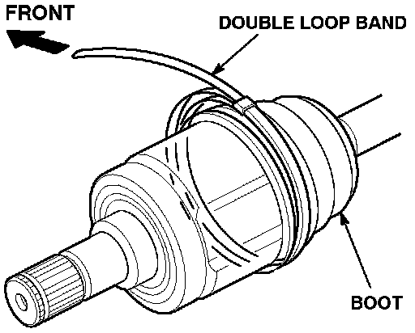
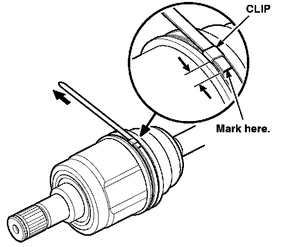
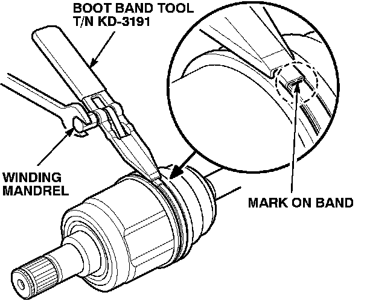
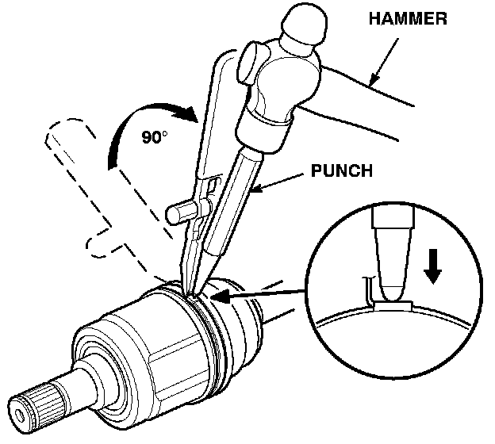
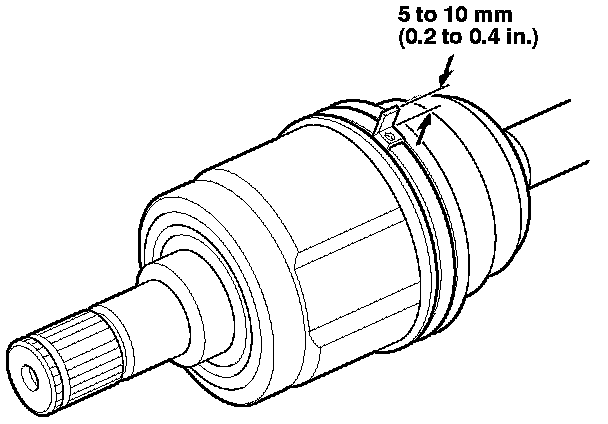
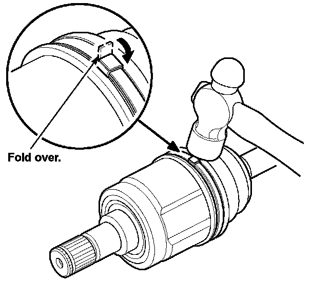

Drivetrain - Revised CV Joint Boot Band/Installation
98-005July 21, 2003
Applies To:
ALL Models
Driveshaft Boot Band Tool
(Supersedes 98-005, Boot Band Tool, dated April 13,1998)
Updated information is shown by asterisks.
The replacement boot bands for the driveshaft CV joint boots have changed. The replacement bands are a double loop type that require a special tool for proper installation.
* TOOL INFORMATION
Boot Band Tool: T/N KD-3191
This tool is already at your dealership. To order additional tools, call the Acura Tool and Equipment Program at 1-888-424-6857. Phone lines are open Monday through Friday from 7:30 a.m. to 7:00 p.m. CT.*
REPAIR PROCEDURE
1. Remove the old boot band(s). Take care not to damage the boot.
2. Remove and inspect the boot. Replace the boot if it is worn or damaged.
3. Install the boot, and fill it with the specified amount and type of grease. Refer to section 16 of the appropriate service manual for the grease amount and type.
4. Adjust the driveshaft to the proper length. Refer to section 16 of the appropriate service manual.

5. Install the replacement boot band onto the large end of the boot with the end of the band facing toward the front of the vehicle.
6. Take up the slack in the boot band by hand, and hold the boot band in place.

7. Measure and mark the band with a felt-tip pen at the specified distance from the clip:
^ If you are installing a new boot, mark the band approximately 10 to 14 mm (0.4 to 0.6 in.) from the clip.
^ If you are reinstalling the original boot, mark the band 10 mm (0.4 in.) from the clip.

8. Thread the free end of the band through the nose section of the boot band tool and into the slot on the winding mandrel.
9. Take up the slack in the boot band by hand, then slowly turn the winding mandrel with a wrench. Tighten the band until the mark you made in step 7 meets the edge of the clip.

10. Raise up the boot band tool to bend the free end of the band 90 degrees, then center-punch the clip to hold the band temporarily.

11. Unwind the boot band tool, and cut off the excess 5 to 10 mm (0.2 to 0.4 in.) from the clip.

12. Secure the end of the boot band by tapping it down over the clip with a hammer.
13. Make sure that the boot band and clip do not interfere with anything and that the band does not move.
14. If necessary, repeat steps 5 through 13 to install the boot band on the small end of the boot.

Disclaimer